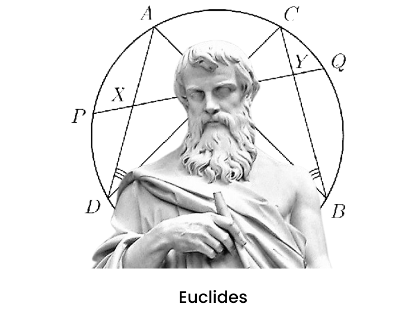

Divisões da Geometria
Atualmente a geometria é dividida em dois conjuntos: Geometria Euclidiana e Geometrias não Euclidianas.
Geometrias não Euclidianas
Euclides, grande matemático e escritor, viveu provavelmente no século III a.C. e é chamado de pai da geometria. Ele foi o primeiro a reunir toda a geometria em uma única obra, chamada “Os Elementos”. Esse matemático baseou a geometria plana em cinco postulados.
O quinto desses postulados é muito mais sofisticado que os outros quatro. Isso levantou dúvidas entre os matemáticos, desde sua época até meados do século XIX, quando Lobachevsky, um matemático russo, resolveu reconstruir a geometria, mas utilizando a negação do quinto postulado de Euclides.
Esse postulado afirmava: Por um ponto fora de uma reta passa uma única reta paralela à reta dada. Lobachevsky considerou o contrário: Por um ponto fora de uma reta passa mais de uma reta paralela à reta dada.
Os objetos e figuras geométricas são definidos da mesma forma que na geometria plana, a única diferença é realmente o quinto postulado.
Os resultados obtidos por Lobachevsky são divididos da seguinte forma: aqueles que não dependem do quinto axioma de Euclides são idênticos à geometria tradicional. Já os que dependem são diferentes. Por exemplo, a soma dos ângulos internos de um triângulo, nas geometrias construídas a partir de Lobachevsky, não é igual a 180°.
Os estudos de Lobachevsky deram origem à geometria Riemanniana e abriram uma porta para a construção de outras geometrias completamente distintas da geometria plana e espacial que conhecemos. O fato mais interessante é que os seus resultados possuem muitas aplicações no dia a dia.
